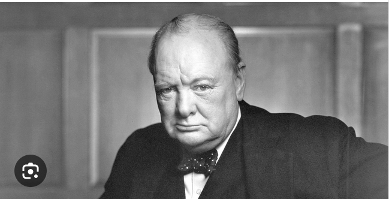
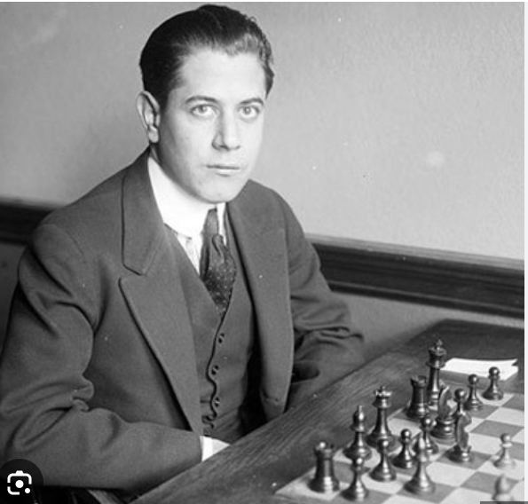
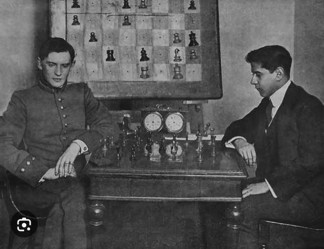

“É bom celebrar o sucesso, mas é mais importante aprender com as derrotas" — Bill Gates

“Sucesso não é o final e o falhanço não é fatal: É a vontade de continuar que conta” —Winston Churchill.


É possível aprender muito mais de um jogo que se perde do que um que se ganha. Vais perder centenas de jogos antes de ficares um bom jogador – Jose Raul Capablanca
Total de partidas de xadrez 5431
- Vitórias 2653 - 51%
- Empates 402 - 6%
- Derrotas 2376 - 43%
- Horas de jogo - 25 dias 11horas